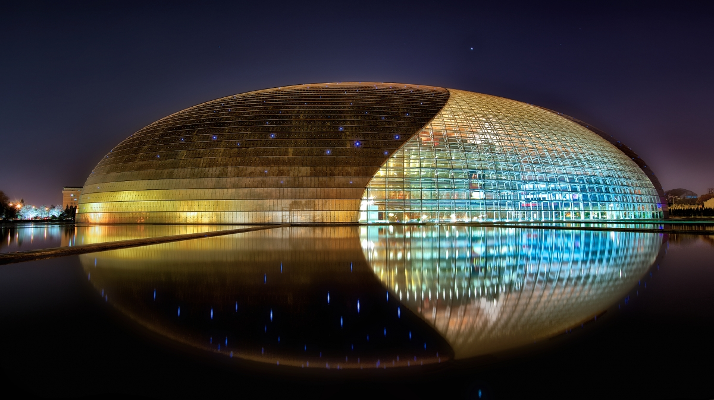

My Dream Vacation
If I could go on a vacation and not have to worry about financial and technical things, I would travel around the world to classical music heritage sites.
Here's where I'll be going:
- I'll start at home, traveling from South Pasadena High School.
- Then, I'll travel to Vienna, Austria to visit the Golden Concert Hall.
- Next, I'll visit Bonn, Germany to check out Beethoven's birthplace.
- After that, it's Salzburg, Austria for Mozart's birthplace.
- Then, I'll be stopping in Bayreuth, Germany to visit the Bayreuth Festspielhaus.
- Next stop will be the Sydney Opera House in Sydney, Australia.
- After, I'll travel to our stop in Asia for the National Centre for the Performing Arts in Beijing, China.
- Next I'll head north to Russia to visit the Bolshoi Theatre in Moscow.
- I'll then continue to London to visit Royal Albert Hall.
- I'll take a slight detour before heading back to the United States by visiting the Palacio de Bellas Artes in Mexico City, Mexico.
- Back in the US, I'll visit the iconic Carnegie Hall in New York City.
- Heading north a little, I'll stop at Boston Symphony Hall in Boston, Massachusetts.
- Finally, I'll be back home in LA to visit Walt Disney Concert Hall.
- As my final stop, I'll visit the iconic Hollywood Bowl in Hollywood.
- Scroll down to join me!
World Map
Follow my adventure on this world map.
Here we go!
Scroll down to continue.
Start: South Pasadena High School
I will start from South Pasadena High School and travel to important classical music heritage sites around the world.
Stop 1: Vienna Golden Concert Hall (Gesellschaft der Musikfreunde in Wien)

Viena's famous Golden Concert Hall, location of the famous New Years' Day Concerts with the Vienna Philharmonic.
Stop 2: Beethoven's Bithplace in Bonn, Germany
Beethoven's birthplace in Bonn, Germany, now the Beethoven House museum.
Stop 3: Mozart's Birthplace in Salzburg, Austria
Mozart's birthplace in Salzburg, Austria, now a museum.
Stop 4: The Bayreuth Festspielhaus in Bayreuth, Germany
The Bayreuth Festspielhaus in Bayreuth, Germany, constructed by Wagner from 1872-76 to host the performance of his now famous (or infamous...) Ring Cycle operas.
Stop 5: The Sydney Opera House in Sydney, Australia

The Sydney Opera House in Sydney, Australia, one of the most iconic performing arts venues in the world.
Stop 6: The National Centre For The Performing Arts in Beijing, China
Please note at the time of creation, the map has a bug in it (the image and markers are not aligned).

The National Centre for the Performing Arts in Beijing, China is an opera house. It is described as a "bird's egg" and is made of titanium and glass surrounded by an artificial lake.
Stop 7: The Bolshoi Theatre in Moscow, Russia
The Bolshoi Theatre in Moscow, home to one of the oldest opera companies in the world.
Stop 8: Royal Albert Hall in London, England
Royal Albert Hall in London, England, built by Queen Victoria and named for her late husband, Prince Albert.
Stop 9: Palacio de Bellas Artes in Mexico City, Mexico

Palacio de Bellas Artes in Mexico City, Mexico (Palace of Fine Arts) is the most important cultural site for Mexico City and the whole country of Mexico.
Stop 10: Carnegie Hall in New York City, NY, USA

The iconic Carnegie Hall in New York City, built with funding by philanthropist Andrew Carnegie. It is one of the most iconic venues an artist can perform in.
Stop 11: Boston Symphony Hall in Boston, MA, USA

The historic Boston Symphony Hall in Boston, known for its phenomenal organ, now a historic site.
Stop 12: Walt Disney Concert Hall in Los Angeles, CA, USA
The famous Walt Disney Concert Hall in Los Angeles, known for its unique architecture and landmark acoustics. It is home to the Los Angeles Philharmonic and Los Angeles Master Chorale.
Stop 13: The Hollywood Bowl in Hollywood, CA, USA
The iconic Hollywood Bowl, the largest natural outdoor amphitheater in the United States. It serves as the summer home of the Los Angeles Philharmonic
Image Sources
- http://www.sphstigers.org/rotating_images/6770/6770_12_1000_0_0.jpg
- https://upload.wikimedia.org/wikipedia/commons/5/59/The_Wiener_Musikverein_(8336449001).jpg
- http://militaryingermany.com/wp-content/uploads/2016/04/Beethoven-Haus-1-Kelly-Bonn-Beethoven%E2%80%99s-Birthplace-16-1024x576.jpg
- http://www.salzburg.info/website/var/tmp/image-thumbnails/80000/82480/thumb__contentGalleryBig/mozarts-geburtshaus-mit-hagenauerplatz_260907.jpeg
- https://upload.wikimedia.org/wikipedia/commons/b/b1/Wagner-Festspielhaus_Bayreuth1995.jpg
- https://upload.wikimedia.org/wikipedia/commons/4/40/Sydney_Opera_House_Sails.jpg
- http://exhibitoo.com/static/i/m/620.jpg
- https://upload.wikimedia.org/wikipedia/commons/9/93/Royal_Albert_Hall,_London_-_Nov_2012.jpg
- https://upload.wikimedia.org/wikipedia/commons/8/8b/Moscow-Bolshoi-Theare-1.jpg
- https://upload.wikimedia.org/wikipedia/commons/b/b2/Palacio_de_Bellas_Artes.jpg
- http://www.nycgo.com/images/venues/2086/carnegie_hall_exterior__x_large.jpg
- https://upload.wikimedia.org/wikipedia/commons/9/97/Symphony_Hall,_Boston_MA.jpg
- http://www.musiccenter.org/Media/F_AboutUs/F1OurVenues/F1_1_Walt-Disney-Concert-Hall.jpg
- http://www.hollywoodbowl.com/sites/all/themes/maestro/css/img/hollywoodbowl.jpg